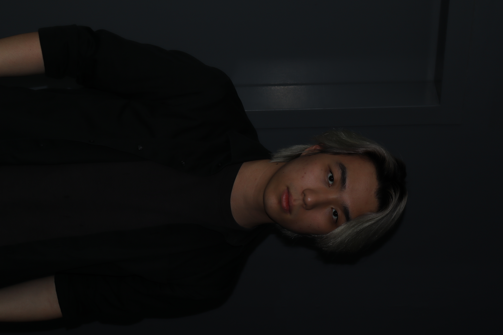

Tiew Zhe Ming
"Haven't you heard that there is always a way out? As long as I want to go, the road is right under my feet."

Hi everyone, my name is Tiew Zhe Ming, and I'm a Digital Media student. I'm passionate about design,
photography, video editing, and web development. I enjoy turning daily inspirations into creative visual
works that express emotion and storytelling. In my free time, I like playing basketball, watching movies,
and listening to music, which often give me new ideas for my projects. I'm always eager to learn new skills,
explore different styles, and challenge myself creatively. My goal is to create designs that not only look
good but also connect with people on a deeper level.